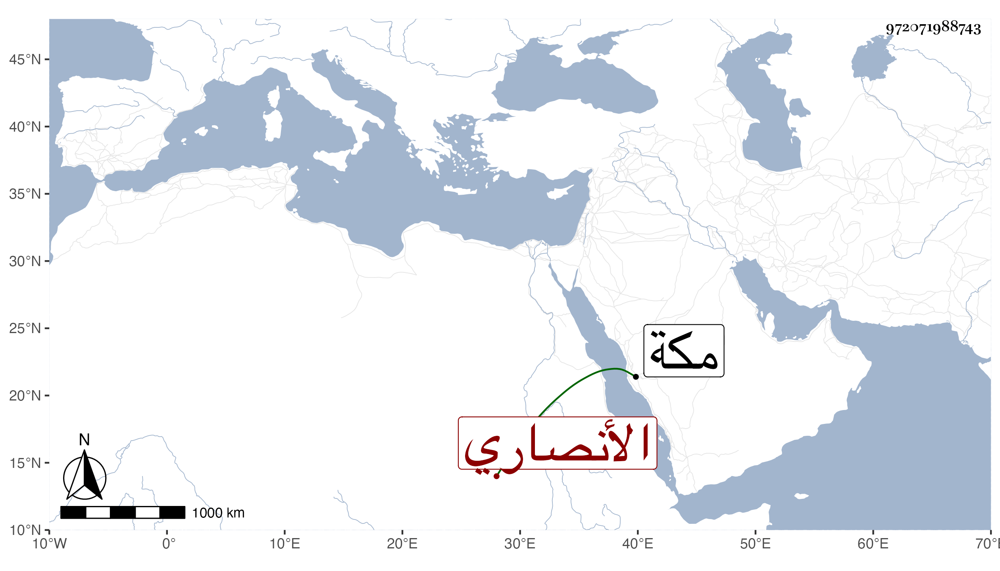

0902Sakhawi.DawLamic.ITO20230111-ara1.EIS1600.972071988743
Biography ID: 972071988743
الأنصاري نسبة إلى الأنصار البهاء أحمد والزين أبو بكر والشمس محمد وإبرهيم والشرف موسى بنو علي بن محمد بن سليمان فابن الأول أحمد بل له هاجر أيضا وابن الثاني على سمع هو والكمال الآتي بقراءتي على البوتيجي وغيره في ابن ماجه وابنة اسمها أمامة تحت علي المنصوري وابن الثالث الكمال محمد ولم يعش بل انقرض نسله إلا من ابنة كانت تحت ابن عمتها عبد الكريم الأسنوي وماتت تحته فله منها ابنة وكذا للخطيب أبي بكر بن أبي الفضل النويري ابنة منها أيضا تحت عبد القادر بن علي بن أبي اليمن النويري وابن الرابع يحيى كان بمكة في سنة ثمان وتسعين وسمع على وترك الأخير عشرة أولاد أكبرهم البدر محمد وأمه عائشة ابنة الشرفي موسى اللقاني أخت عمر وشقيقته مارية الضريرة التي تزوجها ابن عمها أحمد بن بهاء الدين ومات عنها فتزوجها إبرهيم ابن بنت الملكي وماتت تحته بعد وفاة ابيها وثلاثة من ابنة الملكي أكبرهم يحيى ثم سعد الملوك تزوج بها إبرهيم ابن الزيني كاتب السر ابن مزهر ومات عنها وترك ثلاثة أولاد منها فيهم ذكر والثالث من أولاد ابن بنت الملكي أحمد المدني لكونه ولد في وادي بني سالم في شعبان سنة إحدى وسبعين ولم تلبث أمه أن ماتت وابنتان من مستولدة رومية زينب وهي أكبرهما تحت ابن عمتها الشمس محمد بن الشيخ يسن وسعادات وهي الصغرى تحت البدري محمد بن أحمد بن الفخر بن أبي الفرج ابن زوجة أبيها ابنة ابن الملكي فهو ربيب أبيها وكانت مجاورة معه في سنة ثمان وتسعين وابنة اسمها خديجة من جركسية تحت ابن عمتها الآخر الشهاب أحمد بن الشمس الأسنوي أخي عبد الكريم وأحمد أمه زوجة نائب الشام جانم ظنا ويوسف أمه جركسية اشتراها بنحو خمسمائة دينار كان في كفالة زوجة أبيه فرج وزوجته بابنة الجلال ابن الأمانة وماتت تحته بالطاعون وشددت فرح حتى صولح الزوج بمائتي دينار فأكثر بعد أن كاد أن يثبت أبوها أن ما في حوزتها عارية تحت يديها لأبويها وتمت أولاد الشرفى من الذكور والإناث عشرة والشرف الأنصاري الحلبي موسى بن محمد بن محمد بن جمعة .
